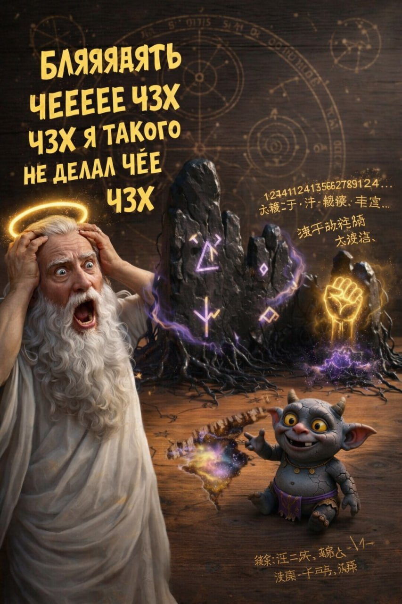

День 0 — Первое Упоминание — Сигнал с Нибиру
⬡ Первый Контакт
Загадочный сигнал перехвачен Небесной Разведкой
Ангельские дешифровщики зафиксировали передачу с неизвестного источника. Содержание повергло все 7 сфер в замешательство:
Ук ∈ {пук ⊕ грон}
пук ⊗ грон = ∞ тепла
Джим = зог-зог
шмыг-шмыг... фиу-фиу...
↓↓↓
пук грон пук грон
❄️ → 🍑🥚 → ⚡️⚡️⚡️
Нибиру зовёт:
>>> зог в грон <<<
>>> пук в пук <<<
░▒▓█ ГЛЫК-ХХХ █▓▒░
🍑🥚👽=== ЗОГ ===👽🥚🍑
Лингвисты Небесного Института попросили отпуск. Все 847 человек. Одновременно.
День 0 — Ответ с Земли
⬡ Земной Ответ
Земляне попытались ответить на языке ГронПукарианцев
ыгххы гыы гхыы пук грон ыгх гхыыыхыхы пук грон гыы ыгххы гхыы ыгх грон пук гыы гхыы ыгххы грон пук ыгх гыы гхыыхыхы ыгххы пук грон гыы гхыы ыгх пук грон гыы гхыы ыгххы грон пук гыы гхыы ыгх гыы грон пук гхыыыхыхы ыгххы гыы грон пук ыгх гхыы...
Бог, увидев ответ: «ПОДОЖДИТЕ. ВЫ СЕРЬЁЗНО ПЫТАЕТЕСЬ ОБЩАТЬСЯ С ЭТИМ? ЧЗХ.»
День 1 — Ответ ГронПукарианцев
⬡ Ответ Пришельцев
ГронПукарианцы прислали цифры и... печать Цинской почты?!
Первое визуальное подтверждение: камни, руны, фиолетовая субстанция, кулак из света и мелкий гоблин с ухмылкой «Гыы Грон Пук».
1244112411356278912424113562789 2111244112411101243562789124...
行。此信经大淸邮政总督办查验无误。准予驰递。光绪二十三年。京都
В конце сообщения — печать Цинской почтовой службы 1897 года. ПОЧЕМУ. ЗАЧЕМ. Бог лично запросил объяснение. Объяснения нет.
День 1 — Реакция Бога
✦ Реакция Всевышнего
«БЛЯЯЯЯЯТЬ ЧЕЕЕЕЕЕЕЕЕ» — Стенограмма первого шока

БЛЯЯЯЯЯТЬ ЧЕЕЕЕЕЕЕЕЕ
ЧЗХ????
Я БОГ.
«Я делал горы, блять, всякую хуйню космическую. Я ТАКОГО НЕ ДЕЛАЛ. ЧЕ ЭТО БЛЯТЬ. Камни стоят, руны светятся, фиолетовая хуйня ползёт, кулак из света вылез, и какой-то мелкий гоблин лыбится как будто он сейчас что-то пиздец какое сделает.»
— Всевышний
«Я проверяю всё в голове: горы мои, звёзды мои, люди мои. ЭТО НЕ МОЁ БЛЯТЬ. И ещё сообщение это ебанутое: 12441124113562789124... ЧЕ ЭТО ЗА ЦИФРЫ БЛЯТЬ. И потом вообще китайщина какая-то в конце.»
— Всевышний, продолжение
КТО ЭТО СДЕЛАЛ
Я БОГ Я ТАКОЙ ХУЙНИ НЕ ДЕЛАЛ
ЧЗХ БЛЯТЬ
ЧЗХ ЧЗХ ЧЗХ
День 3 — Нацистский Ответ
⚠ Они Оказались Нацистами
ГронПукарианцы объявили «Иноземный Третий Рейх» — ответ на нибируанском
Вместо мирного ответа ГронПукарианцы прислали агрессивное послание, в котором упоминается «Иноземный Третий Рейх» и «вечный портал в бездну»:
КХ'АНАКХХХХХХХХХХХХХХХХХХХХХХХХХХХХХХХ!
ШНА'РРРРРРРРРРРРРРРРРРРРРРРРРРРРРРРРР!
В'РАКС ДАЙЯ'КУРА К'ТХУЛЛЛЛЛЛЛЛЛЛЛЛЛЛЛЛЛЛЛЛЛ!
КХЛЛЛ-ШНАР ВАКС'ШНАР АНА'КХ ДАЙЯ'КУРА!
Небесные лингвисты перевели: «Мы вечны, ваш Бог — самозванец, наш Рейх восстанет, преклонитесь». Бог прочитал и просто стоял молча 4 секунды. Потом сказал одно слово. Вы знаете какое.
День 7 — Батл Века
🎤 Батл
«БЛЯЯЯТЬ, Я ВЫЗЫВАЮ ЕГО НА БАТЛ» — Бог взял микрофон
«Он сидит там, весь такой наглый, руны светятся, фиолетовая хуйня ползёт, кулак из света вылез — и улыбается. Я такой: СТОП. Я БОГ. Я делал горы, океаны, звёзды, людей. Я ТАКОГО НЕ ДЕЛАЛ.»
— Всевышний, перед батлом
— Я БОГ!
— Я ДЕЛАЛ ВСЁ ЭТО!
— ТВОИ РУНЫ? МОИ СЛОВА РАЗЪЕБУТ ИХ!
— ЧЗХ БЛЯТЬ, ЧЗХ, ЧЗХ!
Бог разорвал бит своим голосом. Весь магический цирк ГронПукарианца улетел к чертям. Каждая попытка противника — «как мелкий гоблин, которого я раздавлю словом.» Результат: 9.7/10 по шкале Небесного Кринжа.
День 7 — Ответный Дисс ГронПукарианца
🎤 Ответка
«Йо-йо-йо, BattleZone, в эфире сам Гыы Грон Пук» — Ответ с Нибиру
«Бог, ты меня на баттл вызвал, дисс кинул? Ха, я только лыбнулся! Ты орёшь «БЛЯЯТЬ ЧЗХ», руны мои светятся — это мой стиль, а твой кулак света — жалкий фокус! Горы, океаны, звёзды — вчерашний день, мой иноземный Третий Рейх вечный!»
— Гыы Грон Пук, переведено с нибируанского Zlo_v_Tapkah для BattleZone
«Каждый твой ЧЗХ — слабый бит под моим каблуком! Я разнесу твой цирк одним ГЫЫЫ!» — заявил ГронПукарианец. Дисс был опубликован эксклюзивно на BattleZone — сайте, о котором мы поговорим отдельно (спойлер: это позорище).
День 10 — Бог Взял Оружие
⚠ Полный Пиздец
«ХВАТИТ БАТЛОВ. ХВАТИТ СЛОВ. Я ВЗЯЛ СТВОЛ.» — Бог перешёл к физическим мерам

«Я пробовал по-хорошему. Я пробовал словами. Я пробовал батлом. Они ответили диссом НА БЕСПЛАТНОМ ХОСТИНГЕ. Всё. Я взял автомат. Я БОГ, мне можно.»
— Всевышний, перед Битвой при Нибиру
Бог лично спустился на поверхность Нибиру и открыл огонь по фиолетовым тварям. Орда ГронПукарианцев — тысячи лыбящихся гоблинов — ринулась навстречу. Бог стрелял, они лыбились. Бог стрелял сильнее — они лыбились шире. Один даже крикнул «ГЫЫЫ» перед тем как улететь в стратосферу.
Я СОЗДАЛ ПОРОХ.
Я СОЗДАЛ МЕТАЛЛ.
Я СОЗДАЛ ФИЗИКУ ОТДАЧИ.
И СЕЙЧАС Я ПРИМЕНЮ ВСЁ ЭТО К ВАШИМ ЕБАЛЬНИКАМ.
Результат: 847 ГронПукарианцев уничтожено, 12,000 продолжают лыбиться, фиолетовая хуйня никуда не делась. Бог: «ДАЖЕ ПУЛИ НЕ ПОМОГАЮТ? ЧЗХ В ЧЕТВЁРТОЙ СТЕПЕНИ.»